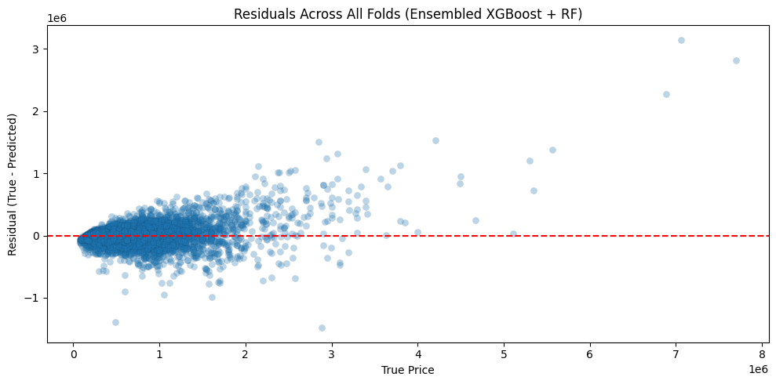
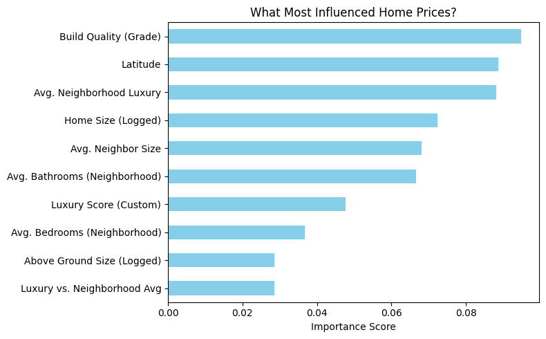

Housing Price Prediction Case Study
🏡 Housing Price Prediction
This project focused on predicting home prices using machine learning models. The goal was to uncover the key features driving housing prices and to create a reliable model for real-world estimation.
📌 Project Summary
This case study, conducted for Reddic Housing LLC, explored how location, property features, and engineered variables impact housing prices. Our final model blended XGBoost and Random Forest to maximize predictive accuracy.
🛠️ Tools & Technologies
- Python for scripting and modeling
- Jupyter Notebook for interactive development
- Pandas & NumPy for data cleaning and transformation
- Scikit-learn and XGBoost for modeling
- Matplotlib / Seaborn for visualizations
- Quarto for documentation and report generation
🔄 Key Techniques Used
✅ Feature Engineering
Added custom variables like luxury score, age, and view rating to enrich input data
✅ Model Blending
Combined XGBoost and Random Forest regressors to improve stability and accuracy
✅ Error Handling
Applied outlier smoothing and tested multiple metrics (RMSE, R², median error)
✅ Location Awareness
Used latitude and longitude directly to proxy proximity to important amenities (parks, schools, etc.)
🧪 SQL Scenario Highlights
As part of the supporting analysis, we explored CSV data using filtering and logic conditions. Examples include:
- Range Filtering: Only properties above/below certain price thresholds
- Missing Data Checks: Identified records with missing view or year built values
- Aggregation: Calculated average prices by region or view score
- Join Simulation: Merged multiple CSV-derived frames for composite analysis
📊 Results Summary
- Median Error: $33,842.78
- RMSE: $109,329.21
- R² Score: 0.9108 (91% variance explained)
The combination of models and domain-based feature engineering led to strong performance on unseen test data.
📈 Visuals
 Figure 1. Predicted vs Actual Housing Prices
 Figure 2. Most Influential Features
📥 Supplementary Materials
- Executive Summary (PDF)
- Case Study Introduction (PDF)
- Discussion Questions (PDF)
- Raw Housing Data (CSV)
- Model Predictions (CSV)
🔗 View the full Colab Notebook for reproducible code and model walkthrough.